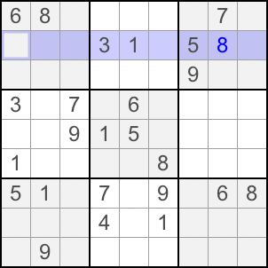
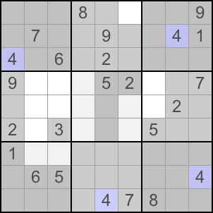

返回课程目录
在一个单元（行、列或宫）中，若某个数字只有一个可能的位置，这个位置就是 Hidden Single 。
下图中，第 1 宫的第 2、3 列以及第 3 行都不能填 9，所以 9 只能放在 R2C1。

更容易发现 Hidden Single 的方法是点击一个已知数字。Sudobility 的 iPhone 软件会自动将无法填入该数字的格子变灰。下图中点击数字 4 后，可以看出第 2 宫的 4 只能位于 R1C6。
